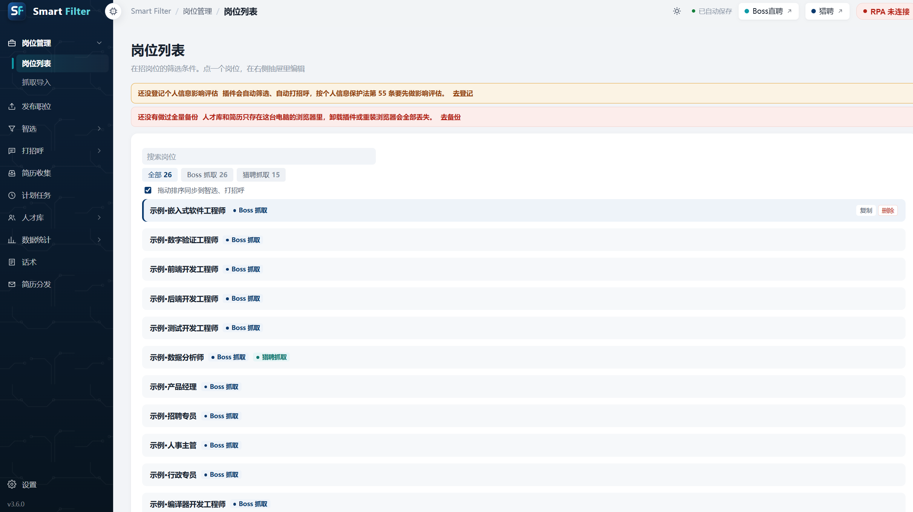
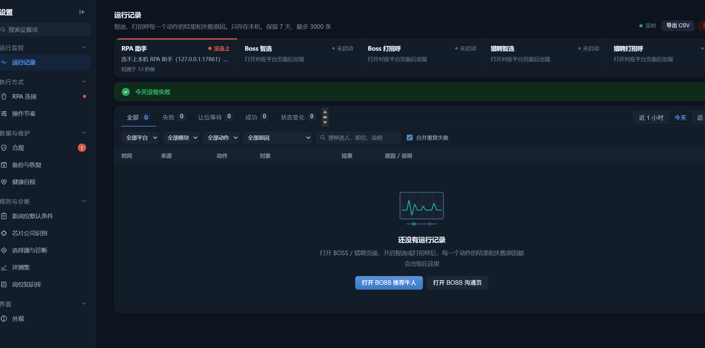

Smart Filter
简历不出本机的
智能筛选与决策审计工具
开源 Chrome 扩展：本地解析简历、逐项可解释评分、每次自动判定留痕可复核。没有服务端、不需要账号、离线可用。
MIT 开源
Manifest V3
数据仅存本机
无需构建
v3.6.0
界面一览
内置 26 个虚构示例岗位，装上 1 分钟即可看到完整流程，无需任何配置。


30 秒上手
不需要 Node、不需要构建、不需要注册任何账号。
- 下载从 GitHub Releases 下载最新 zip 并解压
- 打开扩展页Chrome 地址栏输入
chrome://extensions（Edge 为edge://extensions），打开右上角「开发者模式」 - 加载点「加载已解压的扩展程序」，选择含
manifest.json的目录 - 导入示例打开工作台 → 「导入内置岗位」→ 立即看到 26 个示例岗位与完整评分流程
核心能力
定位是辅助决策，不是替代招聘人员的判断。
本地优先
解析、评分、存储全部在浏览器内完成。项目不运营任何服务端，维护者无法接触您的数据。
多格式解析
PDF（含扫描件 OCR）、DOCX、招聘页面在线简历，全部本地处理。
可解释评分
逐项展示命中与未命中的条件及规则版本，答得出「为什么淘汰 A 留 B」。
决策审计
每次自动判定生成决定记录，不合格默认先由人工确认，可设保留期限、可按请求删除。
评测集回归
漏打率 / 误打率可测，规则改动可回归验证，避免「改一条规则，坏一片结果」。
供应链可审计
28 个第三方文件逐个登记来源与 SHA256，CI 每次推送全量校验。
边界说明：本工具仅提供辅助建议，不构成录用或淘汰决定，最终决策须由招聘人员人工复核。评分维度不包含性别、年龄、婚育、民族、宗教、籍贯等受保护属性。